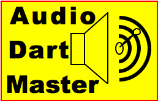
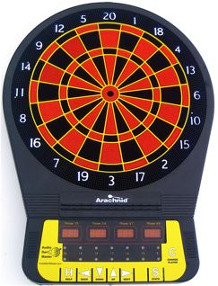
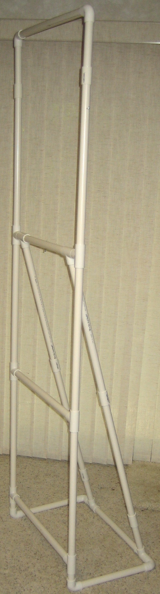

NOW SHIPPING! Call 763-383-0077
Email: AudioDartMaster@samjasmine.com

Fully accessible talking dart board 
Description:
- 29 inches high, 21 inches wide and 2 inches thick (70 x 52 x 5 centimeters).
- 14 pounds (6 kilograms).
- Includes a shock-cord plastic pipe toe board that reaches to the wall.
- Includes a power transformer for a 110 volt outlet.
- Includes wall mounting screws on a pre-measured string.
- Includes three sets of soft-tip darts.
Who uses a talking dart board?
- Blind and visually impaired people who want to play an active game.
- People who like to play darts, but don't know the rules or scoring.
- Schools for the blind and visually impaired.
- Dart Leagues who may have some members with visual disabilities.
- People who would like a game that is more fun than a circle of cork on the wall.
Features:
- Tactile front panel with large symbols.
- Speaks every action and everything displayed in a human voice.
- Help key explains every option and game.
- One to eight players.
- Tactile front panel with large symbols.
- Contains a spoken instruction manual and rules for every game.
- Full displays for sighted users. (Scores and cricket lites or round and dart counters)
- Games and options to make playing fun for beginners and experts.
- Easy 4-key menu interface for all options.
- History (un-throw) dart feature corrects mistakes.
- Spoken name for each player. (Keeps 20 names for future use.)
- League option calls when a player is blocked.
- National Dart Association statistics (points per dart, marks per round, round out....)
- National Dart Association feats (white horse, hat trick, three in a bed, high ton....)
- Ten level volume.
- Calls 'inside' and 'outside' for hits to the two singles rings.
- 25 or 50 point double bull's eye option.
- Optional 'clock position' called if you don't have the positions of the numbers memorized.
- Optional stereo 'ping' or 'click' helps blind players aim.
- External speaker jack for loud speakers or communication aids.
- Virtually self-explaining

Games and Game Options:
- 301/501/701/901 (double in, double out, league, 25/50 point bull)
- Count up (double in, 25/50 point bull)
- Cricket (Quick / Classic cricket / Cut-throat, double in)
- Around The Clock
- Five Dart Golf (9 hole / 18 hole)
- Baseball
- Killer (3/5/7/9 lives, Straight/Double/Double or Triple in)
- Gotcha (25/50 point bull)
- Training Mode
Pricing:
- Audio Dart Master (Mark 5) $600.00
- Dart board wall stand $80.00
Allows the dart board to be used without putting screws in the wall.
Includes a toe board on a folding frame attached to the stand.
Disassembles for easy storage or transportation.
- Extra Toe Board $15.00
If you buy a board with a stand and later decide to mount it on the wall,
you can adapt the toe board that comes with the stand or buy this one.
- Replacement Power Cords $15.00
Payment Options:
- Credit card
- Check -We will ship after the check clears.
- New! Layaway plan.
Interviews about us:
Support and Resources: